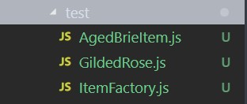
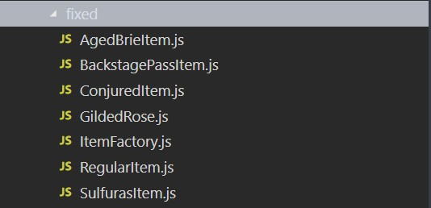

-
1. Testy
Język: JavaScript
Łączna ilość testów: 12
/* AGED BRIE */ it('increases the quality of Aged Brie', () => { let shop = new Shop([new Item('Aged Brie', 3, 2)]) items = shop.updateQuality() expect(items[0].sellIn).toBe(2) expect(items[0].quality).toBe(3) }) it('does not increase quality of Aged Brie over 50', () => { let shop = new Shop([new Item('Aged Brie', 10, 50)]) items = shop.updateQuality() expect(items[0].sellIn).toBe(9) expect(items[0].quality).toBe(50) }) /* BACKSTAGE PASSES */ it('increases the quality of Backstage passes', () => { let shop = new Shop([new Item('Backstage passes to a TAFKAL80ETC concert', 12, 20)]) items = shop.updateQuality() expect(items[0].sellIn).toBe(11) expect(items[0].quality).toBe(21) }) it('increases the quality of Backstage passes twice when sellIn <= 10', () => { let shop = new Shop([new Item('Backstage passes to a TAFKAL80ETC concert', 10, 20)]) items = shop.updateQuality() expect(items[0].sellIn).toBe(9) expect(items[0].quality).toBe(22) }) it('increases the quality of Backstage passes triply when sellIn <= 5', () => { let shop = new Shop([new Item('Backstage passes to a TAFKAL80ETC concert', 5, 20)]) items = shop.updateQuality() expect(items[0].sellIn).toBe(4) expect(items[0].quality).toBe(23) }) it('decreases the quality of Backstage passes to 0 after concert', () => { let shop = new Shop([new Item('Backstage passes to a TAFKAL80ETC concert', 0, 20)]) items = shop.updateQuality() expect(items[0].sellIn).toBe(-1) expect(items[0].quality).toBe(0) }) it('does not increase quality of Backstage Pass over 50', () => { let shop = new Shop([new Item('Aged Brie', 10, 50)]) items = shop.updateQuality() expect(items[0].sellIn).toBe(9) expect(items[0].quality).toBe(50) }) /* CONJURED ITEM */ it('decreases the quality of Conjured item twice when sellIn > 0', () => { let shop = new Shop([new Item('Conjured Mana Cake', 3, 6)]) items = shop.updateQuality() expect(items[0].sellIn).toBe(2) expect(items[0].quality).toBe(4) }) it('decreases the quality of Conjured item twice when sellIn <= 0', () => { let shop = new Shop([new Item('Conjured Mana Cake', 0, 20)]) items = shop.updateQuality() expect(items[0].sellIn).toBe(-1) expect(items[0].quality).toBe(16) }) /* REGULAR ITEM */ it('decreases the quality of Regular item when sellIn > 0', () => { let shop = new Shop([new Item('+5 Dexterity Vest', 10, 20)]) items = shop.updateQuality() expect(items[0].sellIn).toBe(9) expect(items[0].quality).toBe(19) }) it('decreases the quality of regular item when sellIn <= 0', () => { let shop = new Shop([new Item('Elixir of the Mongoose', 0, 7)]) items = shop.updateQuality() expect(items[0].sellIn).toBe(-1) expect(items[0].quality).toBe(5) }) /* SULFURAS */ it('does not change the quality of Sulfuras', () => { let shop = new Shop([new Item('Sulfuras, Hand of Ragnaros', 0, 80)]) items = shop.updateQuality() expect(items[0].sellIn).toBe(0) expect(items[0].quality).toBe(80) })Wynik testów:
$ npm test > gilded-rose@1.0.0 test C:\Ug\zjprog\jasmine > jasmine Randomized with seed 60194 Started ....FF...... Failures: 1) Gilded Rose decreases the quality of Conjured item twice when sellIn <= 0 Message: Expected 18 to be 16. Stack: Error: Expected 18 to be 16. atat UserContext. (C:\Ug\zjprog\jasmine\spec\GildedRoseSpec.js:85:30) at 2) Gilded Rose decreases the quality of Conjured item twice when sellIn > 0 Message: Expected 5 to be 4. Stack: Error: Expected 5 to be 4. at at UserContext. (C:\Ug\zjprog\jasmine\spec\GildedRoseSpec.js:77:30) at 12 specs, 2 failures Finished in 0.019 seconds Randomized with seed 60194 (jasmine --random=true --seed=60194) npm ERR! Test failed. See above for more details. Produkty typu magicznego nie są obsługiwane.
-
2. Złożoność
$ cr original Mean per-function logical LOC: 3 Mean per-function parameter count: 0 Mean per-function cyclomatic complexity: 1 Mean per-function Halstead effort: 106.5094800484617 Mean per-module maintainability index: 137.23712065818867 First-order density: 0% Change cost: 100% Core size: 0% Physical LOC: 66 Logical LOC: 3 Mean parameter count: 0 Cyclomatic complexity: 1 Cyclomatic complexity density: 33.33333333333333% Maintainability index: 137.23712065818867 Dependency count: 0Raport:
Plato raport originalLines of code: 66
Logical lines of code: 3
Halstead effort: 106.5094800484617
Maintainability index: 137.23712065818867
Change cost: 100%
Cyclomatic complexity: 1
Plato - Maintainability: 55.33
Maintainability - łatwość utrzymania. Wartość proporcjonalna do ilości czasu potrzebnego developerowi/programiście żeby zmienić fragment kodu wraz z ryzykiem że zmiana ta może zaburzyć działanie innego fragmentu kodu. Im wyższa wartość, tym lepiej.
Halstead effort - określa wysiłek wymagany do opracowania lub utrzymania programu. Im niższa wartość, tym łatwiej modyfikować program.
Cyclomatic complexity - "liczba decyzji, które musi wykonać dany blok kodu". Większość języków zapewnia konstrukcje takie jak if, while itd. dla punktów "decyzji". complexity-report skala: -metody 1-10 proste do zrozumienia -metody 10-20 bardziej złożony kod, testowanie jest trudniejsze -metody powyżej 20 są typowe dla kodu z dużą ilością potencjalnych ścieżek wykonania, może być w pełni zrozumiany i przetestowany tylko z dużą trudnością i wysiłkiem -metody powyżej 50 są uznawane za niemożliwe do utrzymania.
-
3. Kod
Aby obsługa przedmiotów magicznych działała, wystarczyło dodać kolejny if w dwóch miejscach:
if(this.items[i].name == 'Conjured Mana Cake') { this.items[i].quality = this.items[i].quality - 2; } -
4. Zasady i wzorce.
Zasady stosowane podczas refaktoryzacji:
- SOLID
-Single responsibility
-Open–closed
-Liskov substitution
-Interface segregation
-Dependency inversion
- DRY - Don't Repeat Yourself
- Unikanie if
- Factory design pattern(Metoda wytwórcza)
- SOLID
-
5. Refaktoryzacja
- SOLID
-Single responsibility - jedna funkcja zmieniona na wiele klas zawierających funkcję odpowiadającą za aktualizację stanu konkretnego produktu.
-Open–closed - każda klasa posiada funkcję updateQuality i może być łatwo rozszerzona o więcej funkcji.
-Liskov substitution(Zasada podstawienia Liskov) - zasada nie jest łamana ze względu na brak możliwości edycji klasy bazoej Item.
- Unikanie if - instrukcje if zostały zastąpione np. operatorami potrójnymi. Nie udało się zupełnie uniknąć ich używania.
- Factory design pattern(Metoda wytwórcza) - wzorzec został wybrany ze względu na dużą ilość rodzajów przedmiotów i ich rozróżnianie przez nazwę.
Testowanie rozwiązania dla Aged Brie < 50, klasa AgedBrie i ItemFactory.
Struktura plików:
Kod:
if (this.items[i].name != 'Aged Brie') { if (this.items[i].name != 'Backstage passes to a TAFKAL80ETC concert') { if (this.items[i].quality > 0) { if (this.items[i].name != 'Sulfuras, Hand of Ragnaros') { this.items[i].quality = this.items[i].quality - 1; } } } else { this.items[i].quality = this.items[i].quality - this.items[i].quality; } } else { if (this.items[i].quality < 50) { /* TEST FOR AGED BRIE */ this.items .map(ItemFactory.createItem) } }Wynik testów:
$ npm test > gilded-rose@1.0.0 test C:\ug\zjprog-kata\jasmine > jasmine Randomized with seed 94135 Started ..F.F....... Failures: 1) Gilded Rose decreases the quality of Conjured item twice when sellIn > 0 Message: Expected 5 to be 4. Stack: Error: Expected 5 to be 4. atat UserContext.it (C:\ug\zjprog-kata\jasmine\spec\GildedRoseSpec.js:77:30) at 2) Gilded Rose decreases the quality of Conjured item twice when sellIn <= 0 Message: Expected 18 to be 16. Stack: Error: Expected 18 to be 16. at at UserContext.it (C:\ug\zjprog-kata\jasmine\spec\GildedRoseSpec.js:85:30) at 12 specs, 2 failures Finished in 0.021 seconds Randomized with seed 94135 (jasmine --random=true --seed=94135) npm ERR! Test failed. See above for more details. Wynik pozostał taki sam, co pozwoliło na rozszerzanie wybranego rozwiązania o kolejne klasy.
Złożoność:
$ cr test Mean per-function logical LOC: 3.3333333333333335 Mean per-function parameter count: 0 Mean per-function cyclomatic complexity: 1 Mean per-function Halstead effort: 164.4707902175689 Mean per-module maintainability index: 140.517526106307 First-order density: 0% Change cost: 33.33333333333333% Core size: 0% C:\ug\zjprog-kata\jasmine\src\test\AgedBrieItem.js Physical LOC: 18 Logical LOC: 1 Mean parameter count: 0 Cyclomatic complexity: 1 Cyclomatic complexity density: 100% Maintainability index: 162.61472146706737 Dependency count: 0 C:\ug\zjprog-kata\jasmine\src\test\GildedRose.js Physical LOC: 68 Logical LOC: 3 Mean parameter count: 0 Cyclomatic complexity: 1 Cyclomatic complexity density: 33.33333333333333% Maintainability index: 137.23712065818867 Dependency count: 0 C:\ug\zjprog-kata\jasmine\src\test\ItemFactory.js Physical LOC: 15 Logical LOC: 6 Mean parameter count: 0 Cyclomatic complexity: 1 Cyclomatic complexity density: 16.666666666666664% Maintainability index: 121.70073619366497 Dependency count: 5Maintainability zwiększyło się o kilka punktów.
Atomizacja elementów.
Struktura plików przed refaktoryzacją:
Struktura plików po refaktoryzacji:
updateQuality() zostało skrócone. Map wykonuje funkcję raz na każdym z elementów tablicy w kolejności i tworzy nową tablicę na podstawie wyników. Elementy są przekazywane do ItemFactory.
const ItemFactory = require('./ItemFactory') class Item { constructor(name, sellIn, quality) { this.name = name this.sellIn = sellIn this.quality = quality } } class Shop { constructor(items = []) { this.items = items } updateQuality() { this.items .map(ItemFactory.createItem) return this.items } } module.exports = { Shop, Item }Klasa ItemFactory tworzy nowe obiekty na podstawie nazw przedmiotów.
const AgedBrieItem = require('./AgedBrieItem') const BackstagePassItem = require('./BackstagePassItem') const ConjuredItem = require('./ConjuredItem') const RegularItem = require('./RegularItem') const SulfurasItem = require('./SulfurasItem') class ItemFactory { static createItem(item) { if (item.name.includes('Aged Brie')) { return new AgedBrieItem(item) } else if (item.name.includes('Sulfuras, Hand of Ragnaros')) { return new SulfurasItem(item) } else if (item.name.includes('Backstage passes to a TAFKAL80ETC concert')) { return new BackstagePassItem(item) } else if (item.name.includes('Conjured')) { return new ConjuredItem(item) } else { return new RegularItem(item) } } } module.exports = ItemFactoryNa koniec klasa konkretnego obiektu wykonuje updateQuality według potrzeb.
Instrukcje warunkowe dla każdego rodzaju produktu zostały zastąpione klasami dedykowanymi konkretnym przedmiotom.
Ograniczeniem była klasa Item, której nie można było edytować.
Aby uniknąć instrukcji if, zostały one zastąpione operatorami potrójnymi.
class AgedBrieItem { constructor(item) { this.item = item this.updateQuality() } updateQuality() { let qualityFifty = this.item.quality === 50 this.item.sellIn -= 1 if (qualityFifty) return this.item.quality += 1 } } module.exports = AgedBrieItemclass BackstagePassItem { constructor(item) { this.item = item this.updateQuality() } updateQuality() { let qualityZero = this.item.sellIn <= 0, qualityOne = this.item.sellIn > 10, qualityTwo = this.item.sellIn > 5 && this.item.sellIn <= 10, qualityThree = this.item.sellIn > 0 && this.item.sellIn <= 5, qualityFifty = this.item.quality === 50, qualityEquals = this.item.quality = this.item.quality this.item.sellIn -= 1 if (qualityFifty) return qualityZero ? this.item.quality = 0 : qualityEquals qualityOne ? this.item.quality += 1 : qualityEquals qualityTwo ? this.item.quality += 2 : qualityEquals qualityThree ? this.item.quality += 3 : qualityEquals } } module.exports = BackstagePassItemclass ConjuredItem { constructor(item) { this.item = item this.updateQuality() } updateQuality() { let qualityTwo = this.item.sellIn > 0, qualityFour = this.item.sellIn <= 0, qualityFifty = this.item.quality === 50, qualityEquals = this.item.quality = this.item.quality this.item.sellIn -= 1 if (qualityFifty) return qualityTwo ? this.item.quality -= 2 : qualityEquals qualityFour ? this.item.quality -= 4 : qualityEquals } } module.exports = ConjuredItemclass RegularItem { constructor(item) { this.item = item this.updateQuality() } updateQuality() { let qualityOne = this.item.sellIn > 0, qualityTwo = this.item.sellIn <= 0, qualityFifty = this.item.quality === 50, qualityEquals = this.item.quality = this.item.quality this.item.sellIn -= 1 if (qualityFifty) return qualityOne ? this.item.quality -= 1 : qualityEquals qualityTwo ? this.item.quality -= 2 : qualityEquals } } module.exports = RegularItemclass SulfurasItem { constructor(item) { this.item = item this.updateQuality() } updateQuality() { let sellInZero = this.item.sellIn === 0 sellInZero ? this.item.sellIn = 0 : this.item.sellIn = this.item.sellIn this.item.quality = 80 } } module.exports = SulfurasItem - SOLID
-
6. Testy
Wynik testów:
$ npm test > gilded-rose@1.0.0 test C:\Ug\zjprog\jasmine > jasmine Randomized with seed 64854 Started ............ 12 specs, 0 failures Finished in 0.029 seconds Randomized with seed 64854 (jasmine --random=true --seed=64854)Produkty typu magicznego są obsługiwane.
-
7. Złożoność
$ cr fixed Mean per-function logical LOC: 2.142857142857143 Mean per-function parameter count: 0 Mean per-function cyclomatic complexity: 1 Mean per-function Halstead effort: 98.61970139155434 Mean per-module maintainability index: 152.04836883053673 First-order density: 0% Change cost: 14.285714285714285% Core size: 0% C:\ug\zjprog-kata\jasmine\src\fixed\AgedBrieItem.js Physical LOC: 18 Logical LOC: 1 Mean parameter count: 0 Cyclomatic complexity: 1 Cyclomatic complexity density: 100% Maintainability index: 162.61472146706737 Dependency count: 0 C:\ug\zjprog-kata\jasmine\src\fixed\BackstagePassItem.js Physical LOC: 26 Logical LOC: 1 Mean parameter count: 0 Cyclomatic complexity: 1 Cyclomatic complexity density: 100% Maintainability index: 162.61472146706737 Dependency count: 0 C:\ug\zjprog-kata\jasmine\src\fixed\ConjuredItem.js Physical LOC: 22 Logical LOC: 1 Mean parameter count: 0 Cyclomatic complexity: 1 Cyclomatic complexity density: 100% Maintainability index: 162.61472146706737 Dependency count: 0 C:\ug\zjprog-kata\jasmine\src\fixed\GildedRose.js Physical LOC: 27 Logical LOC: 4 Mean parameter count: 0 Cyclomatic complexity: 1 Cyclomatic complexity density: 25% Maintainability index: 129.56423828475548 Dependency count: 1 C:\ug\zjprog-kata\jasmine\src\fixed\ItemFactory.js Physical LOC: 23 Logical LOC: 6 Mean parameter count: 0 Cyclomatic complexity: 1 Cyclomatic complexity density: 16.666666666666664% Maintainability index: 121.70073619366497 Dependency count: 5 C:\ug\zjprog-kata\jasmine\src\fixed\RegularItem.js Physical LOC: 22 Logical LOC: 1 Mean parameter count: 0 Cyclomatic complexity: 1 Cyclomatic complexity density: 100% Maintainability index: 162.61472146706737 Dependency count: 0 C:\ug\zjprog-kata\jasmine\src\fixed\SulfurasItem.js Physical LOC: 16 Logical LOC: 1 Mean parameter count: 0 Cyclomatic complexity: 1 Cyclomatic complexity density: 100% Maintainability index: 162.61472146706737 Dependency count: 0Raport:
Plato raport fixedLines of code: 161 - więcej(gorzej)
Logical lines of code: 2 - mniej(gorzej)
Halstead effort: 98.61970139155434 - mniej(lepiej)
Maintainability index: 152.04836883053673 - więcej(lepiej)
Change cost: 14.2% - mniej(lepiej) 7 plików
Cyclomatic complexity: 1 - tyle samo
Plato - Maintainability: 72.12 - więcej(lepiej)